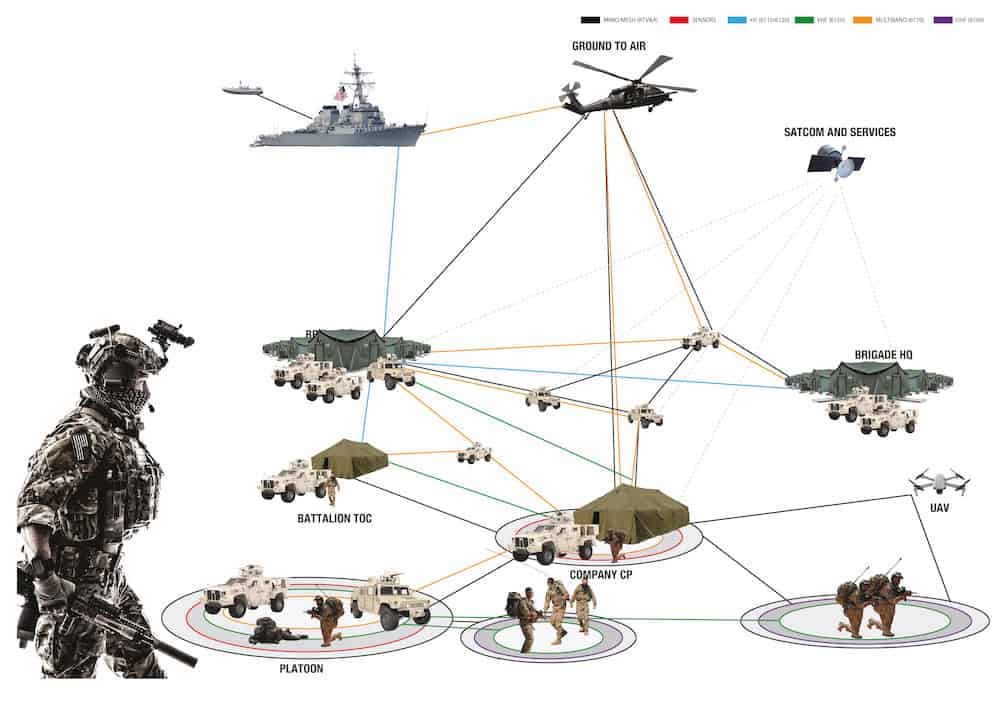

Modern military communications are both complex and multi-faceted. They can act as direct stations for
communication between transmitter and reciever and nodes to facilitate communication between transmitters
and receivers. They can also act as signal repeaters, detection nodes, jamming beacons, location beacons
and many other relevant tactical solutions. In the world of military scouting operations communications
are arguably one of the most important skills that team members need to master. After-all, how are you
going to use the information your force collects on the enemy or terrain to your advantage if you cannot
make the necessary parties aware of the information. This Scouting Bible will cover just how important
military communications are in surveillance and reconnaissance operations by explaining these 4 key points;
1. The history of military communications
2. Modern military communication assets
3. Applications and uses of those communication assets
4. The communication cloud and network on the modern battlefield
